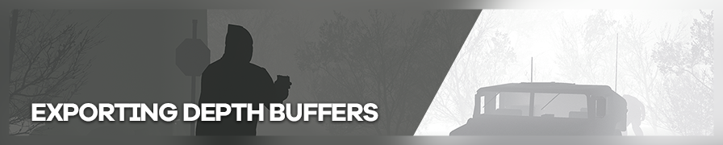
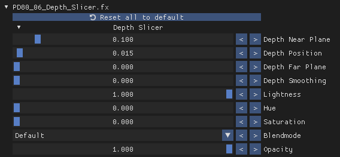
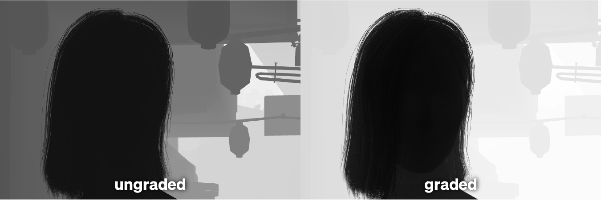
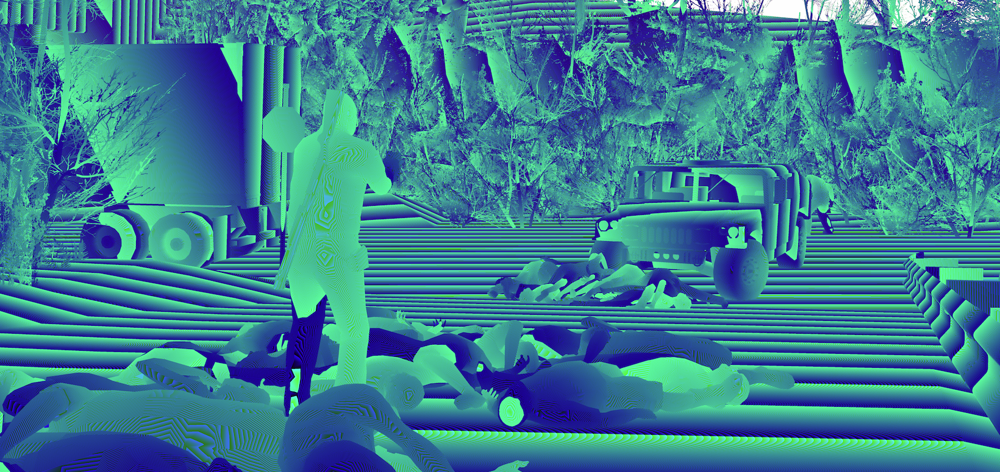
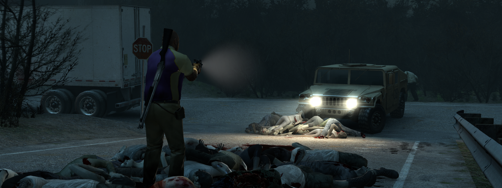
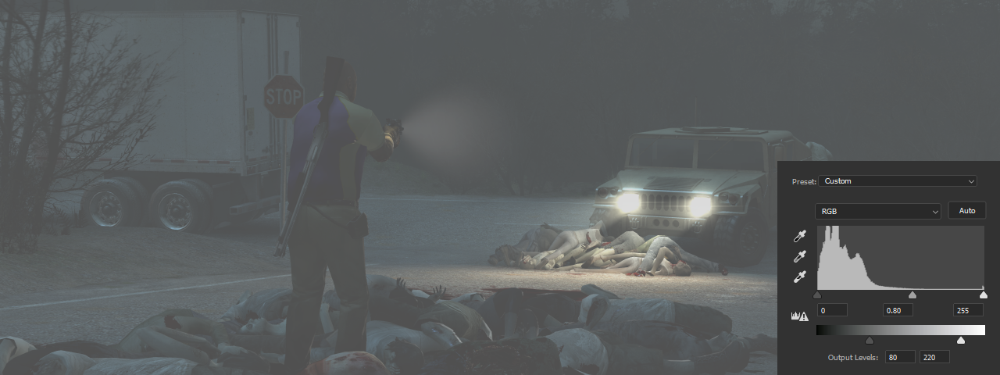

导出深度缓冲可以让你在 Photoshop 或其他类似图像编辑器中对截图进行更精细的后期处理。导出的深度缓冲（即深度图）可用作背景替换的遮罩、基于深度的色彩调整蒙版，也可用来添加雾效，甚至在后期模拟复杂的景深效果。
虽然 ReShade 通过其丰富的着色器目录提供了上述所有功能，但部分用户更倾向于在后期制作中完成这些调整。后期处理的优势在于：可以在"离线"状态下稳定工作（游戏不运行就不会崩溃！），使用自己更熟悉的工具，以及实现 ReShade 目前尚不支持的效果。
本指南将介绍使用 ReShade 导出深度缓冲的三种不同方式，均借助不同着色器实现，其核心原理是对 ReShade 效果进行截图。此外，指南末尾还附有一个简短的教程，演示如何利用导出的深度缓冲添加简单的雾效。
深度切片
如果你只需要对深度缓冲进行简单切片，prod80 的 Depth Slicer 就是你需要的着色器。使用 prod80 的着色器需要先下载仓库顶部列出的 4 个 FXH 文件并添加到你的着色器目录中。你还需要一个能将整个场景变为纯黑的颜色调整着色器，例如将黑色色阶拉满的 qUINT_Lightroom。目标是生成一张黑白图像，方便用作蒙版。
将场景变为纯黑后，确保 Depth Slicer 在 ReShade 界面中排列在 Lightroom（或你所使用的着色器）下方，以便 Depth Slicer 能够作用于纯黑图像。按下图所示配置 Depth Slicer。

此时场景应变为全白，可能带有一片黑色切片。你现在只需调整 Depth Position（深度位置）和 Depth Near Plane（深度近平面）两个参数。调整 Depth Position 直到主体完全变为黑色，背景完全变为白色；然后减小 Depth Near Plane 直到前景物体也变为白色。建议使用方向键进行微调，因为在如此小的数值下滑块很难精确控制。
正确设置后，效果应如下所示。
你现在可以截取这张图，并在你喜欢的图像编辑器中将其用作蒙版。此方法与 Chromakey.fx 的效果非常相似。遮罩通常比绿幕抠图的结果更干净，最适合用于静态图像。
分级深度范围
此方法可以导出深度缓冲的特定范围。由于 .png/.bmp 格式的截图存在 8 位灰度限制，最多只能使用 256 个深度层。当这 256 层被拉伸得过于分散时，可能会出现色带问题。通过使用 DisplayDepth.fx 的调试功能，我们可以高亮显示深度缓冲中仅包含我们所需深度层的特定切片。由于深度图一旦截取便难以进行大幅调整，因此使用此方法前需明确用途。
启用 DisplayDepth.fx 后，将 Present type（呈现类型）设置为 Depth map（深度图），然后进入高级设置。这里有两个关键参数：Far Plane（远平面）和 Multiplier（倍增器）。Far Plane 将远平面（白点）向镜头方向靠近；Multiplier 则类似近平面，将黑点向远离镜头的方向推移。

上图是按照上述步骤调整后的分级深度图示例。Far Plane 被设置为极小的数值 1.0，并逐渐增大 Multiplier，直到主体（黑色部分）与背景明显分离。
这种较窄的深度缓冲范围非常适合浅景深人像等效果，此类场景需要焦平面较窄，但仍希望对主体的耳朵、颈部等部位进行虚化处理。
设置完成后，使用你喜欢的截图工具截图即可。
DisplayDepth.fx 会对其深度层进行抖动混合，以避免输出结果出现色带。这种抖动在某些深度效果中可能表现为瑕疵。可在此处下载包含抖动开关的修改版 DisplayDepth.fx。
高范围深度导出
此方法已基本被 ReShade 5.0 发布后的 murchalloo 的 Frame Capture 插件所取代。该插件可通过 F10 键捕获并处理 32 位深度 .EXR 文件，同时还会捕获颜色缓冲和法线缓冲。
这最后一种方法可以让我们尽可能地还原 ReShade 深度效果所使用的全范围原始深度缓冲。通过将深度信息打包进三个 RGB 通道，可以将其解包并合并为一个 24 位通道，其深度层数远多于 8 位方案。此方法依赖 BlueSkyDefender 的 Depth_Tool.fx 以及 murchalloo 编写的工具（用于将截图转换为 32 位 EXR 文件），两者均可在此处下载。
将 Depth_Tool.fx 添加到着色器目录并构图完成后，只需启用该着色器并确保 ReShade 的截图格式设置为 BMP 即可，无需对着色器进行任何调整。
截图效果应如下所示：

如果图像呈现为淡绿蓝色渐变，则需要将 Custom Depth Map 反转。
以 BMP 格式保存后，打开深度转换器 EXE 并按照其 GUI 操作，它将在 EXE 所在目录下名为"output"的文件夹中输出一个 EXR 文件。
你现在就拥有了一张完美可用的高位深深度图，可在任何支持 EXR 格式的程序中使用！
如果要将 PNG 转换为 BMP，请确保转换为每像素 24 位。BMP 支持多种位深度，转换工具可能默认使用其他位深度。
教程：使用深度图添加雾效
在本指南的最后一部分，我们将介绍如何在 Photoshop 中利用导出的深度缓冲完成一个简单的后期处理教程。通过复制原始图像、进行适当的编辑，再以深度图作为蒙版，我们可以模拟出场景中浓厚雾气的视觉效果。
本教程需要 Photoshop CS4 或更高版本，但也可以轻松移植到其他图像编辑器中。我将以《求生之路 2》的一张截图为例进行演示。
第一步
在 Photoshop 中载入图像，将其从背景层解锁并复制（CTRL+J）。这将是我们要处理的图层。新建一个文件夹/组，将这个复制的图层放入其中，并将文件夹重命名为"Fog"以便整理。

第二步
进入"调整"选项卡，添加"色阶"调整图层，它将控制效果的主体部分。将第二个滑块的左箭头向中间拖动，这会大幅提亮图像，正是我们想要的灰蒙蒙的雾感。然后将第一个滑块的中间箭头向右拖动，进一步压平图像。最后，将第二个滑块的右箭头稍微向左移动，以模拟光线穿越雾气时强度衰减的效果。

第三步
为 Fog 文件夹创建蒙版。现在导入深度图，以便将其用于雾效。Ctrl+单击深度图层以选中所有内容，然后复制（CTRL+C）。Alt+单击 Fog 文件夹的蒙版进入编辑状态，然后粘贴（CTRL+V）深度图。点击其他图层后，应该能看到雾效的渐变过渡。效果不够强烈，因此我们来为蒙版进行调色以增强雾效。
再次 Alt+单击蒙版，可以使用色阶（CTRL+L）对其进行调色。色阶有几个很实用的吸管工具，它们位于"预览"复选框上方，共三个按钮。选择最左侧的吸管，设置黑点——即雾效不可见的区域。在本例中，我希望角色保持清晰可见，所以点击他。最右侧的吸管设置白点，即雾效最浓的区域，我点击树林中的某处。
遗憾的是，由于蒙版不支持调整图层，此次调色将是永久性的。可以点击退出蒙版，撤销并重试，直到获得满意的结果。
已调色

强烈建议在此流程中使用高范围深度图。直接截取 DisplayDepth.fx 的普通深度图在按上述方式调色时，必然会出现色带问题。或者，你也可以在导出前对深度图进行调色（分级深度范围），但这样就无法在后期进行完整的调色灵活度了。
第四步
最后，回到 Fog 文件夹，调整调整图层直到获得满意的效果。我微调了色阶使雾效更暗，并在中间调添加了色彩平衡调整图层为雾气上色。
本教程的目的是为你提供一个探索图像与深度图无限可能性的起点，希望能给你带来灵感！
最后更新于 2021 年 8 月 26 日
作者：moyevka